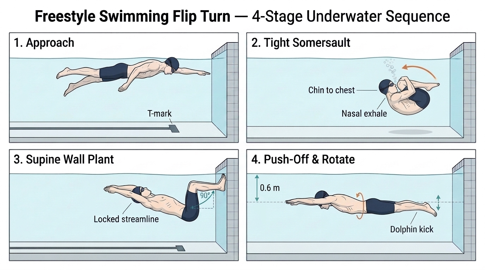

Chiến Thuật Sprint, Pool Pacing, Starts & Flip Turns¶
Thuộc phần:
16-sprint/| Trình độ: Trung cấp → Nâng cao | Thời gian đọc: ~12 phút
Tổng Quan (Overview)¶
Trong bơi bể (25m và 50m), tốc độ bơi mặt nước chỉ là một phần của bức tranh. Một cú xuất phát (Track Start) chuẩn xác giúp bạn dẫn trước 0.5–1.0 giây ngay ở 15m đầu tiên; và thành thạo Lộn vòng chạm tường (Flip Turn / Tumble Turn) giúp bạn tiết kiệm 0.5–1.0 giây ở mỗi thành bể — tức là rút ngay 2–3 giây trên 100m bể 25m và 20–30 giây trên 1.500m mà không hề phải quạt tay mạnh hơn! Chương này hệ thống hóa toàn bộ kỹ thuật Starts, Flip Turns, Pool Pacing và Chiến thuật Sprint để bứt phá mốc < 1:30/100m.
- Mục tiêu cốt lõi: Làm chủ kỹ thuật Flip Turn không mất đà, tối ưu pha Start & Breakout, và áp dụng chiến thuật phân phối tốc độ Even / Negative Split cho từng cự ly (
50m, 100m, 400m, 1.500m). - Cảm giác đúng: Tiếp cận tường không giảm tốc độ, cuộn tròn lộn vòng gọn trong
0.8 giây, đặt hai bàn chân đẩy bật tường ở tư thế ngửa/nghiêng sâu0.6 mrồi lao vút qua vạch 5m. - Sai lầm phổ biến nhất: Bơi chậm lại và ngẩng đầu thở ngay ở sải cuối trước tường khi làm Flip Turn, hoặc bung hết 100% sức ở 25m đầu của bài
100mrồi "chết cứng" ở 25m cuối.
Lý Thuyết (Theory)¶
1. Giải Phẫu 4 Giai Đoạn Của Một Cú Flip Turn Chuẩn (< 1.0 giây tại tường)¶
- Tiếp cận (Approach): Giữ nguyên tốc độ tối đa khi qua vạch chữ T (cách tường
2 m), không lấy hơi ở sải cuối cùng trước tường! - Cuộn lộn (Somersault): Khi tay cuối hoàn tất pha đẩy ngang đùi (cả 2 tay đều nằm dọc hông, lòng bàn tay hướng xuống đáy), gập cằm sát ngực, ấn hai lòng bàn tay xoay người cuộn tròn thật chặt (Tight Ball) bằng cơ bụng và một cú đập Dolphin nhỏ — thở ra nhẹ bằng mũi để nước không tràn vào xoang mũi!
- Đạp tường (Push-Off): Hai bàn chân đặt vuông góc tường (cách mặt nước
30–45 cm, gối gập~90–100°) ở tư thế nằm ngửa hoặc nghiêng 45°, hai tay đã khóa sẵn Streamline sau tai trước khi chân đạp bật tường! - Xoay & Breakout: Đạp thẳng song song đáy sâu
0.6 m, xoay dần từ ngửa sang sấp trong 1–2 cú Dolphin Kick rồi Breakout không thở ở sải đầu tiên.
2. Kỹ Thuật Xuất Phát (Track Start vs In-Water Push)¶
- Track Start (Từ bục xuất phát): Một chân đặt mép trước bục (ngón chân bám chắc), chân sau đặt trên bàn đạp sau (hoặc lùi
30–40 cm), trọng tâm dồn gọn, hai tay nắm mép trước bục. Khi có còi: kéo tay mạnh về sau tạo đà + đạp bùng nổ cả hai chân, phóng cơ thể lao qua cùng một lỗ nhỏ (Clean Hole Entry) ở góc30–35°. - In-Water Push (Trong tập luyện / Test 100m từ thành bể): Luôn chìm xuống sâu
0.6 m, khóa chặt Streamline trước khi đạp ngang song song đáy.
Cơ Sở Khoa Học (Science)¶
Vật Lý & Thủy Động Lực Học (Physics & Hydrodynamics)¶
- Bảo toàn Mô-men Động Lượng trong Flip Turn:
$\(\omega = \frac{L}{I}\)$
Khi bạn cuộn thân thật chặt thành quả bóng nhỏ (gối ép sát ngực, gót sát mông), mô-men quán tính \(I\) giảm mạnh → tốc độ góc cuộn \(\omega\) tăng vọt gấp đôi! Nếu bạn duỗi chân thẳng lều khều khi lộn, thời gian tại tường kéo dài từ
0.8slên1.8s, làm mất trắng toàn bộ quán tính tiếp cận! - Lợi ích năng lượng của Flip Turn vs Open Turn (Chạm tay quay đầu):
- Open Turn bắt buộc bạn phải dừng vận tốc về
0, ngẩng đầu lấy hơi rồi mới chìm xuống đạp lại → mất trung bình0.7–1.2 giây/vòng. - Flip Turn chuyển hóa trực tiếp quán tính tiến tới thành động năng xoay và thế năng nén cơ đùi tại tường → nhanh hơn rõ rệt và giữ nhịp tim ổn định hơn sau khi đã quen nhịp thở.
Cơ Sinh Học (Biomechanics) — Chiến Thuật Phân Phối Tốc Độ (Pool Pacing)¶
| Cự ly | Chiến thuật Split tối ưu | Nhịp chân & Thở | Điểm lưu ý sống còn |
|---|---|---|---|
| 50m Sprint | 98–100% ngay từ mét đầu tiên (All-Out) |
6-Beat Kick toàn lực, thở 0–2 lần (tối đa 3 lần ở người phong trào) |
Start/Breakout 10m + không thở trong 10m cuối |
100m (Mục tiêu < 1:30) |
Controlled Fast 50m đầu + Push 50m sau (50m sau chậm hơn 50m đầu tối đa 1.5–2.5 giây) |
50m đầu 4/6-beat, thở 1:2; 50m sau 6-beat mạnh |
Đừng bung 100% ở 25m đầu (Fly & Die); tận dụng 3 lần Flip Turn (bể 25m) |
| 200m–400m | Even Split hoặc Negative Split (100m cuối nhanh nhất) | 75% đầu 2/4-beat, 25% cuối 6-beat, thở 1:2 |
Kỷ luật giữ nguyên Stroke Count & nhịp CSS ở nửa đầu |
| 800m–1.500m | Negative Split (nửa sau nhanh hơn nửa đầu 2–5 giây) |
2-Beat chủ đạo → 4/6-Beat 200m cuối, thở 1:2 |
Giữ tay cực nhẹ 500m đầu, tối đa hóa DPS |
flowchart LR
A["Qua vạch chữ T (2m trước tường)<br/>Giữ tốc độ, KHÔNG thở sải cuối"] --> B["Hai tay dọc hông + Cằm sát ngực<br/>Cuộn chặt 'Tight Ball' + Thở mũi nhẹ"]
B --> C["Đặt bàn chân lên tường (gối 90°)<br/>Khóa Streamline SẴN ở tư thế ngửa/nghiêng"]
C --> D["Đạp bật sâu 0.6 m + Xoay về sấp<br/>2–3 cú Dolphin Kick"]
D --> E["Breakout không thở vượt vạch 5–7m<br/>Tiết kiệm 0.7–1.0 giây/tường"]Thực Hành (Practical)¶
Tại Sao Kỹ Thuật Này Hiệu Quả (Why It Works)¶
Làm chủ Flip Turn và Pacing 100m là con đường ngắn nhất để bạn phá vỡ bức tường tâm lý 1:30/100m:
- Giả sử bạn đang bơi 1:33/100m bể 25m bằng Open Turn (quay đầu chạm tay) và thở lộn xộn ở 25m đầu.
- Chỉ riêng việc chuyển sang Flip Turn chuẩn (3 vòng × -0.8s = -2.4 giây) + Streamline Breakout qua vạch 6m (-1.5 giây) + phân phối sức 50m đầu 43.5s / 50m sau 45.5s = 1:29.0/100m ngay lập tức mà không cần tăng thêm 1% sức mạnh!
Hướng Dẫn Từng Bước & Cảm Giác Nước (Step-by-Step & Water Cues)¶
4 Bước Tập Flip Turn Cho Người Mới Bắt Đầu (Chỉ Mất 2 Tuần)¶
- Bước 1 — Lộn vòng giữa bể (Mid-Pool Somersault): Bơi 3 sải giữa bể nông, đưa 2 tay về đùi, gập cằm, cuộn tròn 1 vòng lộn nhào trong nước (thở nhẹ qua mũi chống sặc) rồi đứng lên. Lặp
10 lầncho hết chóng mặt. - Bước 2 — Lộn vòng chạm chân tường (Đứng yên không đạp): Bơi tiến tới vạch chữ T, thực hiện 1 sải cuối rồi lộn cuộn đặt hai bàn chân lên tường ở tư thế nằm ngửa — dừng lại kiểm tra khoảng cách gối (
~90°, không quá sát cũng không quá xa). - Bước 3 — Lộn vòng + Đạp tường nằm NGỬA: Lộn đặt chân lên tường, khóa tay Streamline và đạp trượt thẳng trên lưng (ngửa)
5m— bước này giúp bạn bỏ thói quen xấu "cố xoay sấp trước khi đạp tường"! - Bước 4 — Lộn vòng đầy đủ (Đạp + Xoay sấp + Dolphin + Breakout): Đạp tường ở tư thế ngửa/nghiêng
45°, xoay mượt về sấp trong 2 cú Dolphin Kick rồi tung sải Breakout đầu tiên không thở!

Mẹo Nâng Cao (Advanced Tips)¶
- Quy tắc "Chạm đích không ngẩng đầu" (No-Breath Sprint Finish): Trong
5–10mcuối cùng của cự ly50mhoặc100m, tuyệt đối không xoay đầu thở và không ngẩng lên nhìn thành bể — cúi đầu, giữ nhịp 6-beat tối đa và vươn dài một tay chạm mạnh vào bảng đích! - Canh khoảng cách tường bằng vạch chữ T: Mỗi bể bơi tiêu chuẩn đều có vạch chữ T cách tường đúng
2.0 m. Tùy chiều cao, hãy đếm xem sau khi đầu bạn vừa vượt qua ngang vạch chữ T thì cần thêm 1 hay 2 sải tay là vừa đẹp để bắt đầu cuộn lộn (không phải rướn hay co người).
Bài Tập Thực Hành (Drills)¶
| Tên Drill | Mục tiêu Starts, Turns & Sprint | Cự ly / Số hiệp | Cảm giác đúng (Cue) |
|---|---|---|---|
| Flip Turn Progression (Bước 1–4) | Lắp ghép từng mảnh Flip Turn không sặc nước, không mất đà | 10 phút cuối buổi khởi động |
Cuộn gọn nhanh như quả bóng, đạp tường trong tư thế Streamline khóa sẵn |
| Fast-In / Fast-Out Turns | Rèn tốc độ tiếp cận tường & bứt tốc 10m sau tường | 6 × 25m (12.5m cuối trước tường + Flip Turn + 12.5m sau tường @ 95%) |
Không hề giảm tốc độ khi qua vạch chữ T; thoát tường vọt qua vạch 7m |
| 100m Race-Pace Split Simulation | Tập cảm giác phân phối sức 50m đầu / 50m sau cho < 1:30/100m |
4 × 50m @ mục tiêu (43–44s, nghỉ 15s) |
Giữ kỹ thuật EVF sạch sẽ ở 50m đầu để 50m sau không bị hụt tốc |
Phân Tích AI & Video (AI Analysis)¶
- Góc quay khuyến nghị: Ngang dưới nước (Underwater Side View) đặt tại khu vực
0–10 mtính từ thành bể để đo Thời gian 5m-In / 5m-Out (10m Turn Time). - Điểm khớp cần trích xuất (Keypoints):
nose,hip,knee,ankle,wrist, tọa độ thành bể (wall_x). - Ngưỡng phát hiện lỗi tự động:
- Đạt chuẩn: Tổng thời gian từ lúc đỉnh đầu đi qua vạch
5mvào tường → lộn vòng → đạp ra qua lại vạch5m(5m-In / 5m-Out) đạt≤ 6.5–7.5 giây(mục tiêu< 1:30/100m); góc gối đặt lên tường85–110°; hai tay khóa Streamline trước khung hình chân rời tường. - Cảnh báo lỗi: Xoay đầu thở trong
2mcuối trước tường; cố xoay bụng úp sấp khi bàn chân vẫn còn dính tường (gây mất0.4–0.6s).
Lỗi Thường Gặp & Cách Sửa (Common Errors)¶
| Lỗi thường gặp | Triệu chứng nhận biết | Nguyên nhân gốc | Cách sửa (Correction) |
|---|---|---|---|
| Bị nước sộc vào mũi khi lộn vòng | Sặc nước, sợ không dám tập Flip Turn | Nín thở hoặc hít ngược khi đang chổng đầu xuống đáy | Thở ra nhẹ bằng mũi (tạo bong bóng liên tục) trong suốt 0.8 giây cuộn lộn |
| Xoay úp sấp ngay tại tường trước khi đạp | Mất toàn bộ quán tính, chân trượt khỏi tường | Vội vàng muốn về tư thế bơi sấp quá sớm | Tập Bước 3 (Đạp tường nằm ngửa 5m), chỉ xoay về sấp SAU KHI chân đã rời tường |
| Cuộn lộn quá xa hoặc quá sát tường | Hoặc đạp hụt tường, hoặc gối ép gập sát ngực không bật nổi | Không căn mốc vạch chữ T (2m) cố định | Tập đếm chính xác số sải từ vạch chữ T (thường 1–1.5 sải) |
| Thở ở sải cuối trước tường & sải đầu sau tường | Mất 0.8–1.0 giây ở mỗi thành bể |
Thiếu kế hoạch quản lý hơi thở quanh thành bể | Lấy 1 hơi gọn trước vạch cờ 5m → không thở khi qua chữ T → Breakout 1–2 sải không thở |
Tự Đánh Giá Tại Hồ (Self Assessment)¶
- Tôi thực hiện được Flip Turn liên tục ở tất cả các thành bể mà không bị nước vào mũi.
- Tôi không xoay đầu lấy hơi trong
2mcuối trước tường và ở sải Breakout đầu tiên sau tường. - Hai tay tôi đã khóa chặt Streamline sau tai trước khi hai bàn chân đạp bật khỏi tường.
- Tôi đạp tường ở tư thế ngửa/nghiêng
45°sâu0.6 mrồi mới xoay dần về sấp trong lúc lướt/Dolphin Kick. - Tôi biết cách phân phối tốc độ Even / Negative Split cho bài test
100mvà400m, không bị Fly & Die.
Chỉ Số Đo Lường (KPI)¶
| Chỉ số (Metric) | Người mới | Trung cấp | Nâng cao (< 1:30/100m) |
|---|---|---|---|
Thời gian Turn (5m-In → 5m-Out) |
> 9.0 giây (Open Turn) |
7.5–8.5 giây |
5.8–7.0 giây (Flip Turn sắc) |
| Chênh lệch 50m đầu vs 50m cuối (Test 100m) | > 6 giây (Fly & Die) |
3–5 giây |
1.5–2.5 giây (kiểm soát tốt) |
| Thời gian từ tường tới vạch 15m (Start/Push) | > 12.5 giây |
10.5–12.0 giây |
< 9.8 giây |
Câu Hỏi Thường Gặp (FAQ)¶
1. Bị chóng mặt khi tập Flip Turn thì xử lý thế nào?
Rất bình thường trong 1–2 tuần đầu do hệ tiền đình chưa quen xoay nhanh trong nước! Hãy chỉ tập 4–6 lần lộn mỗi buổi, mở mắt nhìn rõ vạch đáy và tường trong lúc lộn, không nhắm tịt mắt, và tăng dần số lần qua từng tuần — sau 2 tuần cảm giác chóng mặt sẽ biến mất hoàn toàn.
2. Nếu tôi chỉ bơi Open Water (Triathlon) thì có cần học Flip Turn không? Vẫn rất nên học! Vì 90% thời gian tập luyện của bạn diễn ra trong bể bơi — Flip Turn giúp duy trì nhịp tim liên tục giống nước mở (không được đứng nghỉ lén ở thành bể!), rèn sức mạnh Core và tiết kiệm hàng trăm giờ tập luyện.
3. Trong bài Test 100m < 1:30 ở bể 25m, nên xuất phát nhảy bục hay đạp tường?
Trong thi đấu chính thức bạn được nhảy bục (Track Start, nhanh hơn ~0.7–1.0 giây). Trong tự kiểm tra tập luyện hàng ngày, hãy chuẩn hóa đạp tường từ dưới nước (Push Start) để dễ so sánh tiến bộ công bằng qua từng tháng!
Tóm Tắt (Summary)¶
- Flip Turn chuẩn + Breakout sâu
0.6 mmang lại2–3 giây/100mmiễn phí trong bể 25m mà không tốn thêm lực tay. - 4 khóa vàng của Flip Turn: Không thở sải cuối + Cuộn chặt thở mũi + Khóa Streamline trước khi đạp + Xoay về sấp SAU khi rời tường.
- Luôn tuân thủ kỷ luật Even / Negative Split để chinh phục cột mốc
< 1:30/100mmột cách thuyết phục và bền vững.
Liên kết chéo: - Chương trước: Kỹ Thuật Bơi Nước Mở - Chương tiếp theo (Phase 9): Tổng Quan Giáo Án 24 Tuần & Test CSS - Kỹ thuật liên quan: Streamline · Dolphin Kick · Caeleb Dressel - Tra cứu thuật ngữ: Glossary
Tài Liệu Tham Khảo (References)¶
- Lyttle, A., & Benjanuvatra, N. (2005). Start right? A biomechanical review of dive start performance. Coaching Science Abstracts.
- Blanksby, B., Gathercole, D., & Marshall, R. (1996). Force plate and video analysis of the tumble turn by age-group swimmers. Journal of Swimming Research.
- USA Swimming — Starts, Flip Turns & Race Pacing Technical Manual.